Assisted fashion direction on Issue 22 of Avenue Magazine. Guided styling, on-set execution, and creative development while mentoring a team of 10 stylists to create a unified, concept-driven visual narrative of ODYSSEY.
Read the full issue →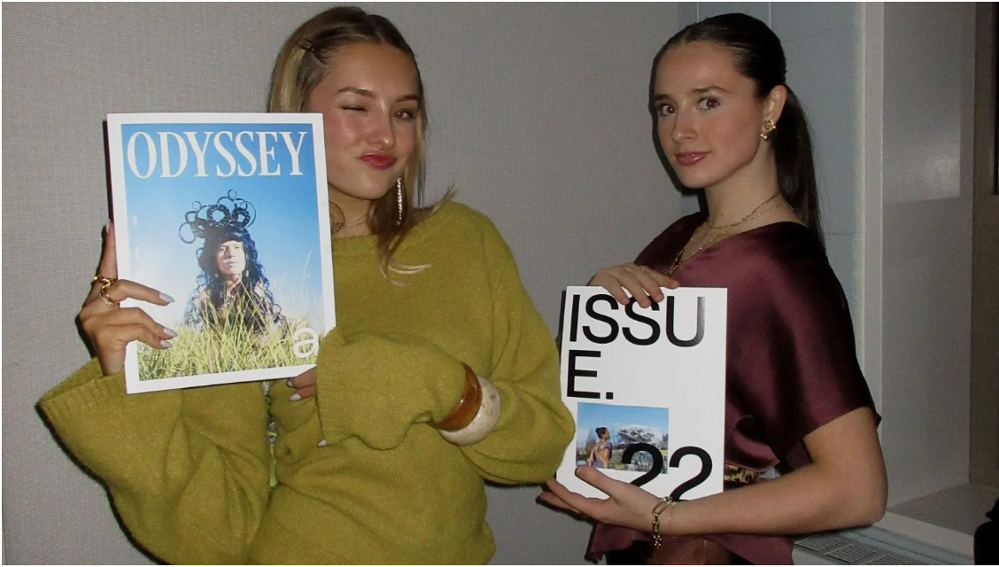
- 10Stylists mentored
- 1Editorial narrative
- 1Issue
- MultipleOn-set shoots
- FullStyling direction
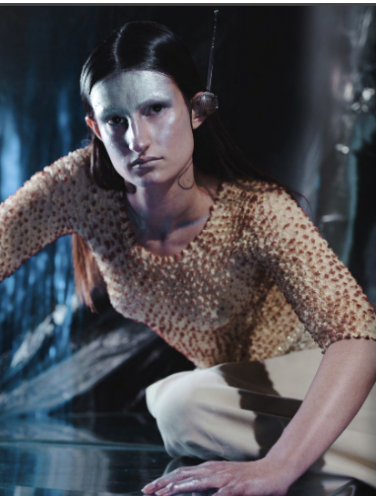
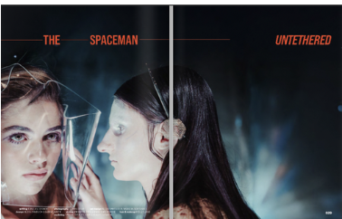
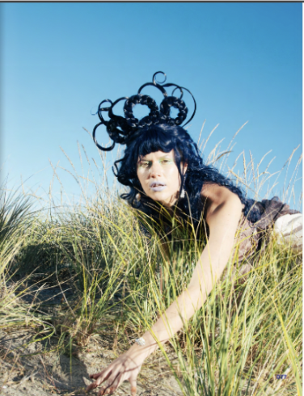
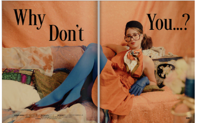
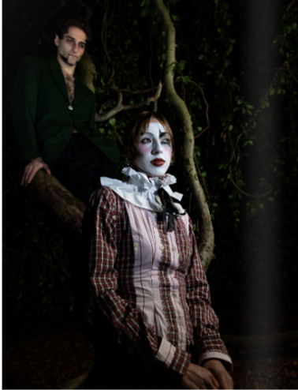
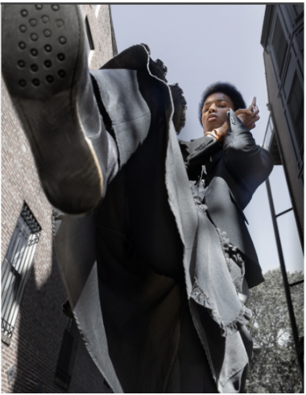
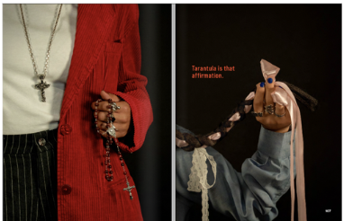
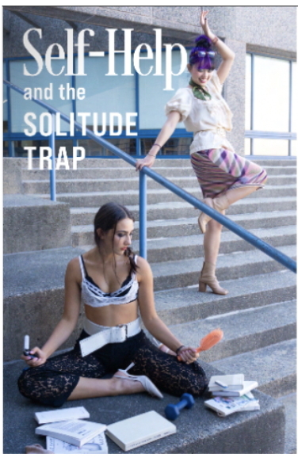
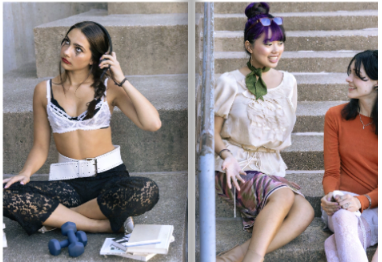
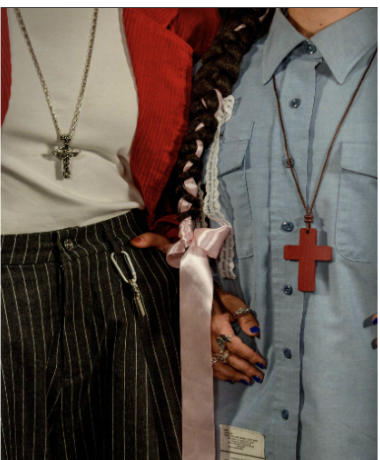
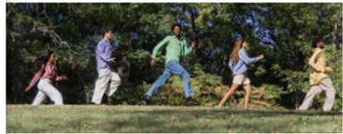
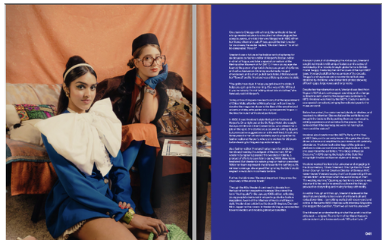
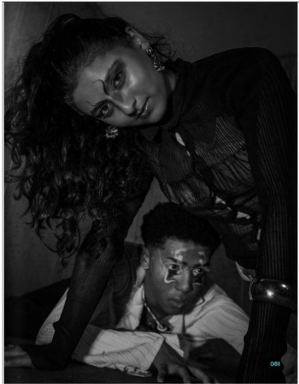
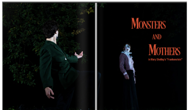
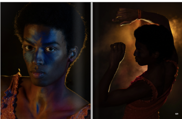
My Role
Assisted in the overall fashion direction for Avenue Magazine’s Issue 22, working closely with the creative team on concept development, styling, and on-set execution. Mentored a team of 10 stylists, coordinated looks across multiple shoots, and helped create a cohesive editorial narrative that captured the tumultuous journey of ODYSSEY.
Odyssey